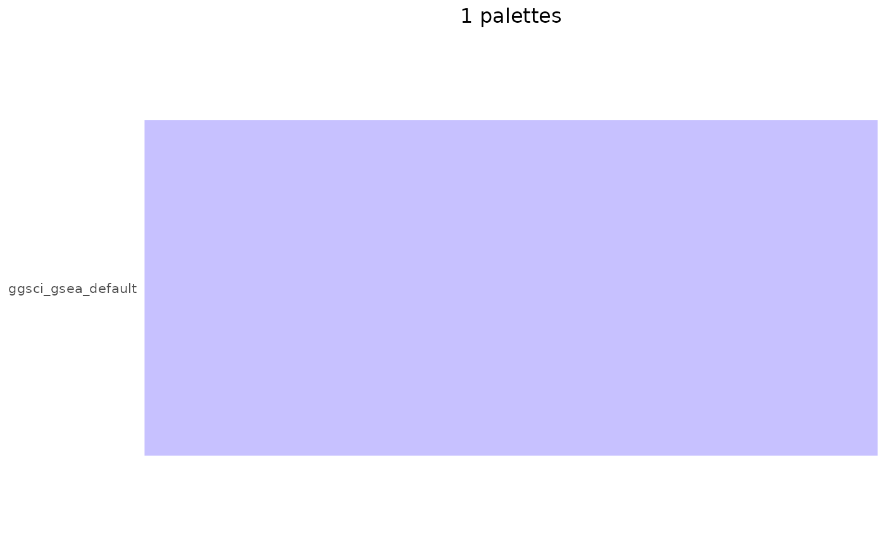

Display the fixed colour palettes in the standard ggsci catalogue
using the same ggplot or gt layout as pal_show().
Usage
pal_show_ggsci(
palette = NULL,
n = NULL,
alpha = 1,
reverse = FALSE,
pattern = NULL,
index = NULL,
max_colors = 20,
output = c("gt", "gg", "console")
)Arguments
- palette
Character vector of fixed palette names. Names use the form
"ggsci_npg_nrc"; theggsci_prefix may be omitted.NULLshows all fixed palettes matchingpattern.- n
Number of colours to retain, capped at each palette's native size. Continuous GSEA, Bootstrap 5, Material and Tailwind 3 palettes are sampled evenly across their full range;
n = 1uses the native middle colour (the lower middle for an even native size). Discrete palettes retain their first colours.NULLuses each palette's native number of colours.- alpha
Opacity of the colours, a plain numeric scalar between 0 and 1 without a class or dimensions.
- reverse
Logical scalar without a class or dimensions; if
TRUE, reverse the final preview colours after applyingnandmax_colors, preserving the selected colour set.- pattern
Single non-missing regex string used to filter palette names.
- index
Non-empty vector of unique positive whole-number indices after filtering. Out-of-range values are ignored. An empty selection reports the argument and matched count before any palettes are drawn.
- max_colors
Positive whole number limiting displayed colours per palette, or
Inffor no display cap. Default 20. Applied afternselection. Withmax_colors = 1, continuous palettes show the middle of the retained colours (the lower middle for an even retained size), and discrete palettes show the first retained colour.- output
Output format:
"gt"(default) for a gt table,"gg"for a ggplot, or"console"for terminal output. gt colour swatches use HTML. LaTeX, Word, RTF and other non-HTML tables show HEX text instead. Useoutput = "gg"for coloured figures in PDF or Word documents.
Value
A ggplot or gt object returned visibly for automatic display. Console output prints and invisibly returns the displayed palette list.
Details
Explicit palette names take precedence over pattern
and type (where available). These filters are applied only when
palette = NULL. Unknown names are reported and skipped when at
least one valid palette remains.
This catalogue excludes iTerm terminal themes and Gephi generative
palettes. Use ggsci::iterm_palettes() and ggsci::pal_iterm()
for iTerm themes, or ggsci::pal_gephi() for Gephi generators, in
versions of ggsci that provide these interfaces.
Gephi presets in newer ggsci databases are excluded before
indexing and colour processing. Explicitly selecting only Gephi presets
is an error; mixed selections warn and retain the fixed palettes.
Generators are never evaluated, so previews do not change the random
number state.
See also
Other colour palettes:
pal_bar,
pal_get(),
pal_heat,
pal_lancet,
pal_list(),
pal_other,
pal_paraSC,
pal_show(),
pal_show_brewer(),
pal_show_hcl(),
pal_show_viridis()
Examples
if (requireNamespace("ggsci", quietly = TRUE)) {
pal_show_ggsci(c("ggsci_npg_nrc", "ggsci_aaas_default"),
n = 5, output = "gg")
# The display cap follows native colour selection
pal_show_ggsci("gsea_default", n = 1, output = "gg")
pal_show_ggsci("gsea_default", n = 4, max_colors = 1, output = "gg")
}
